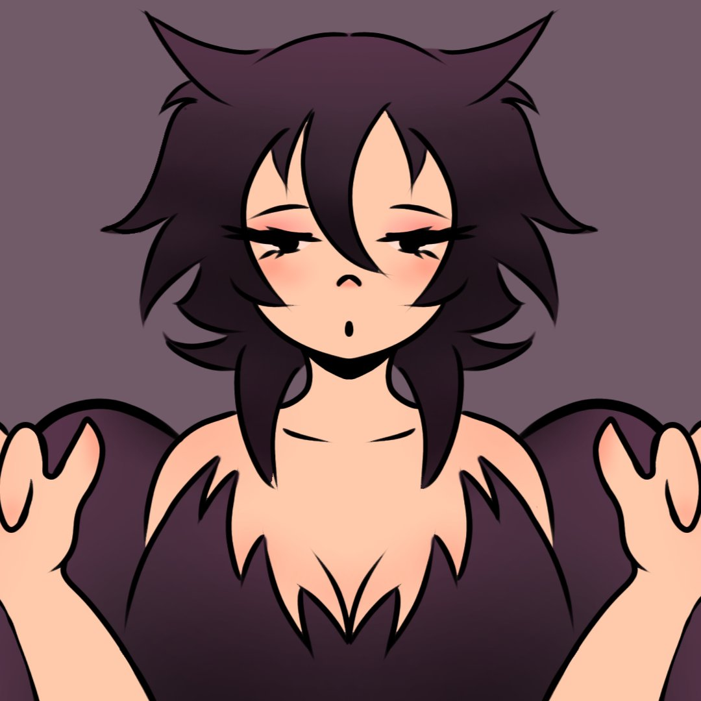

Mirada somnolienta
Un retrato sencillo y expresivo: ojos medio cerrados, mejillas rosadas y las manos levantadas como garras.
Sobre la ilustración
Este personaje con orejas de gato mira al frente con cara de sueño y una boca pequeña que parece soltar un suspiro. Las manos levantadas dan un toque juguetón que contrasta con la expresión cansada.
El fondo es liso a propósito: así la atención se queda en la cara, en el cabello despeinado y en los detalles pequeños, como las pestañas y el rubor.
Técnica usada
Aquí el estilo es más cercano a la caricatura y al anime, con un dibujo limpio. Las claves fueron:
- Líneas negras gruesas que marcan bien la silueta y el cabello.
- Colores planos con degradados suaves en el cabello y en las mejillas.
- Una paleta corta de ciruela, durazno y rosa que combina con el fondo gris morado.
- Una composición de frente y centrada, para que el rostro sea lo primero que se ve.